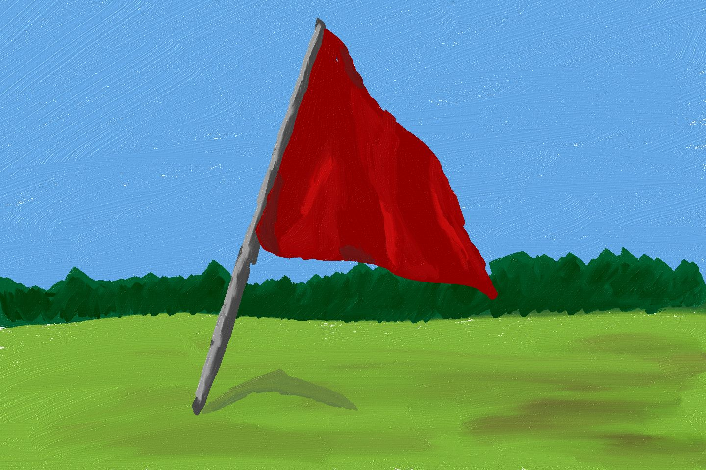

Hooked on Data
About
Speaking
Hooked on Data
A data science blog by Emily Robinson
Categories
All
(25)
A/B Testing
(1)
Career
(13)
Code
(10)
Conference
(2)
Publishing
(4)
Python
(2)
R
(9)
Text Analysis
(1)
Visualization
(3)
Answers to your Career Questions
Career
My favorite resources for a variety of career dilemmas.
Emily Robinson
Jun 22, 2021
Publishing a Technical Book (Part 4): After the Book is Published
Career
Publishing
What it’s like after your book is finished and available in the wild.
Emily Robinson
Apr 6, 2021
Publishing a Technical Book (Part 3): The Writing Process
Career
Publishing
An inside look into how to find the time to write a book and what it’s like to work with a co-author and publisher.
Emily Robinson
Apr 5, 2021
Publishing a Technical Book (Part 2): Finding a Publisher
Career
Publishing
Demystifying how to find a technical book publisher, what they help with, and if you should think about self-publishing.
Emily Robinson
Apr 4, 2021
Publishing a Technical Book (Part 1): Why Do It?
Career
Publishing
What are (and aren’t) the benefits of writing a technical book?
Emily Robinson
Apr 3, 2021
What Types Should You Have on Your Pokémon Team? Efficient Simulation with Matrices in R
R
Code
Finding the best Pokémon type combinations for a maximally effective team.
Emily Robinson
Aug 20, 2019
Exploring Bob Ross paintings
R
Code
Visualization
Using the tidyverse and PCA to explore the features of Bob Ross’ paintings.
Emily Robinson
Aug 14, 2019
Introducing the funneljoin package
R
Code
How our new R package funneljoin makes it easy to analyze sequence of events.
Emily Robinson
Aug 1, 2019
Going Off the Map: Exploring purrr’s Other Functions
R
Code
A walkthrough of some lesser-known purrr functions.
Emily Robinson
Jan 9, 2019
The Lesser Known Stars of the Tidyverse
R
Code
Using exploratory data analysis to shine a light on other tidyverse functions and packages you may not know.
Emily Robinson
Nov 16, 2018
Guidelines for A/B Testing
A/B Testing
12 Guidelines to help you run more effective, trustworthy A/B tests.
Emily Robinson
Aug 7, 2018

Red Flags in Data Science Interviews
Career
What to look out for when interviewing for a new data science job.
Emily Robinson, Emily Robinson, Jacqueline Nolis
Jul 3, 2018
Advice for Applying to Data Science Jobs
Career
Some tips for applying, interviewing, and negotiating for data science jobs.
Emily Robinson
May 29, 2018
The Importance of Sponsorship
Career
While many people know about mentorship, many fewer are familiar with sponsorship, even though it can actually be more important.
Emily Robinson
Feb 14, 2018
Building Your Data Science Network: Finding Community
Career
Where to find other people in your field.
Emily Robinson
Jan 10, 2018
Building your Data Science Network: Reaching Out
Career
How to effectively reach out to people in your field directly.
Emily Robinson
Jan 10, 2018
Making R Code Faster: A Case Study
Code
R
How I sped up my R code and went from it taking 3 minutes to run one iteration to taking less than a second to run 10,000.
Emily Robinson
Nov 30, 2017
Managing Business Challenges in Data Science
Career
A few tips to help you work more effectively with your non-analyst stakeholders.
Emily Robinson
Sep 28, 2017
Giving Your First Data Science Talk
Career
The why and how of giving a good data science talk.
Emily Robinson
Aug 14, 2017
RStudio Conference Recap
Conference
R
Some of my favorite parts about attending my first rstudio::conf.
Emily Robinson
Jan 19, 2017
RStudio Conference: Tips and Tricks
Conference
R
Code
A summary of my top technical takeaways from rstudio::conf(2017).
Emily Robinson
Jan 19, 2017
Topic Modeling the New York Times and Trump
Python
Visualization
Text Analysis
Code
How the New York Times covered Trump leading up to the 2016 election.
Emily Robinson
Sep 30, 2016
Better Plotting in Python with Seaborn
Python
Visualization
Code
An introduction to Seaborn so you too don’t almost quit your bootcamp over matplotlib.
Emily Robinson
Aug 8, 2016
Creating My First R Package Part 1
R
Code
My struggles with STATA and how it motivated me to want to create my first R package.
Emily Robinson
Jul 26, 2016
From Social Scientist to Data Scientist
Career
Reflections on starting my transition from social science academia into data science field.
Emily Robinson
Jul 5, 2016
No matching items